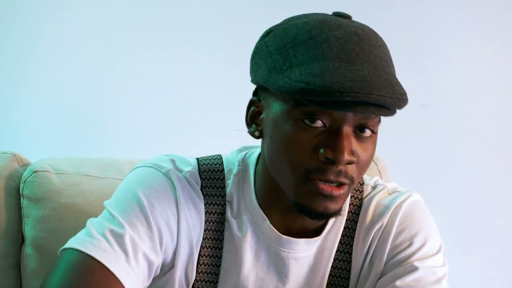

SINGLE2026
Jonaas

RAÍZES.
ANGOLA.
Jonaas é um artista angolano radicado em Portugal.

PERFORMANCE
DISCOGRAFIA
SINGLE2025
Só Quero Você
SINGLE2026
Rascunho
SINGLE2025
I Love You
ÁLBUM2024
Além do Prazer
Jonaas é um artista angolano radicado em Portugal.
